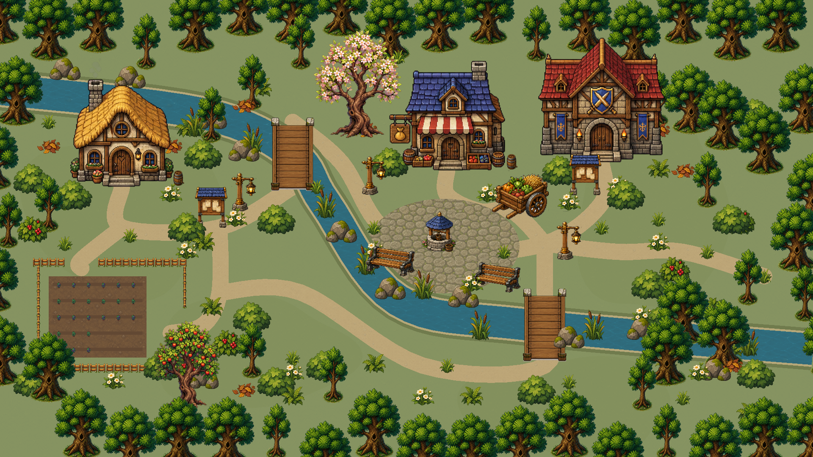

Лунная долина · от иллюстрации к модульной сцене
ПЕРВЫЙ КОНЦЕПТ · ЦЕЛЬНАЯ ИЛЛЮСТРАЦИЯ
НОВЫЙ МАКЕТ · ОТДЕЛЬНЫЕ СПРАЙТЫ И ПОКРЫТИЯ

 НОВЫЙ МАКЕТ · ОТДЕЛЬНЫЕ СПРАЙТЫ И ПОКРЫТИЯ
НОВЫЙ МАКЕТ · ОТДЕЛЬНЫЕ СПРАЙТЫ И ПОКРЫТИЯ